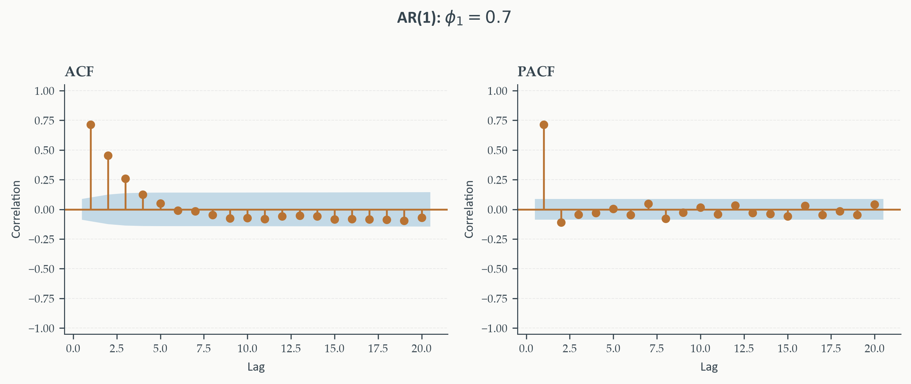
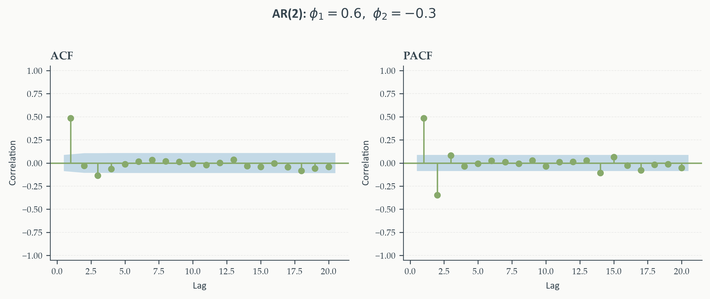
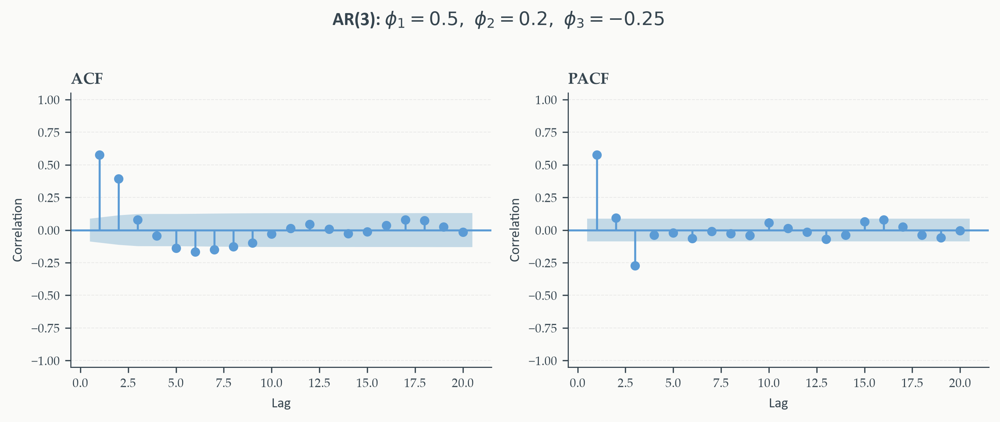
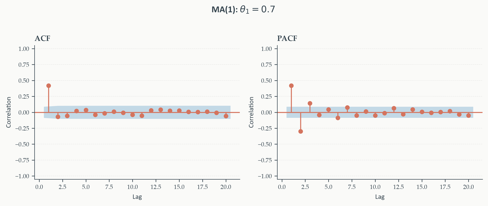
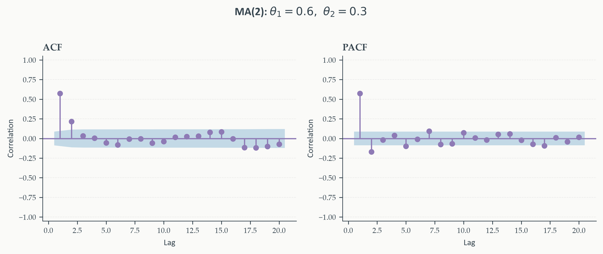
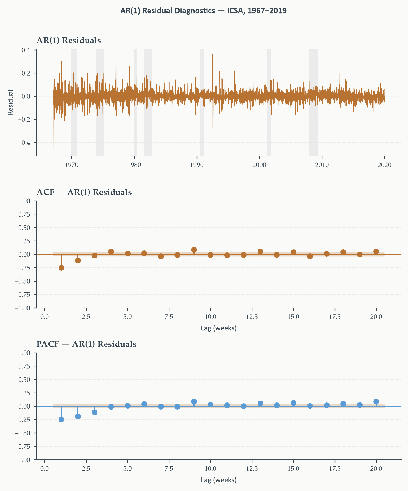
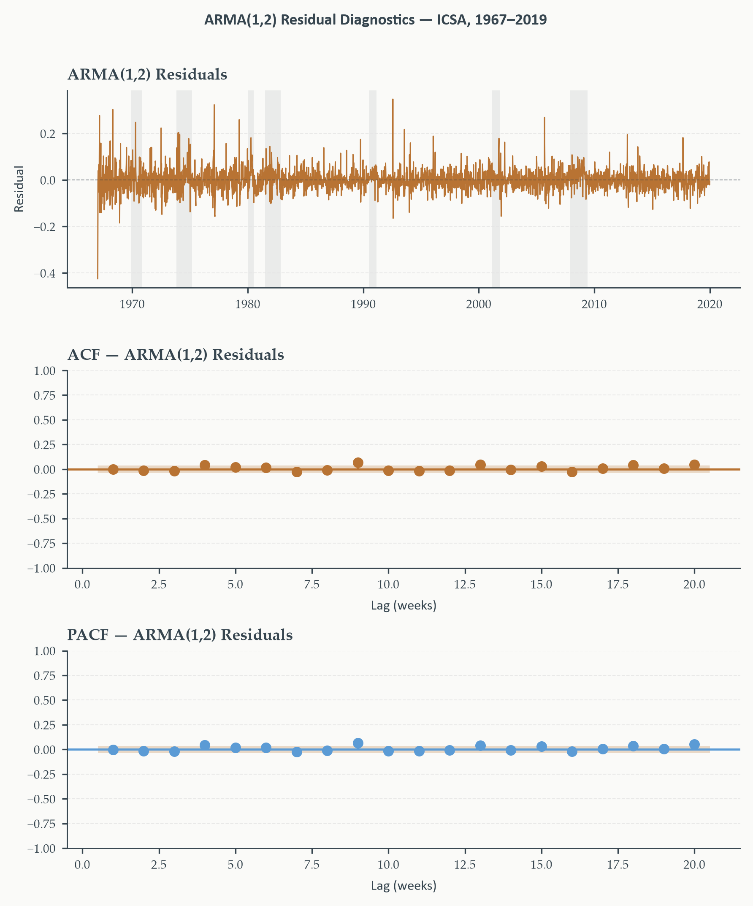
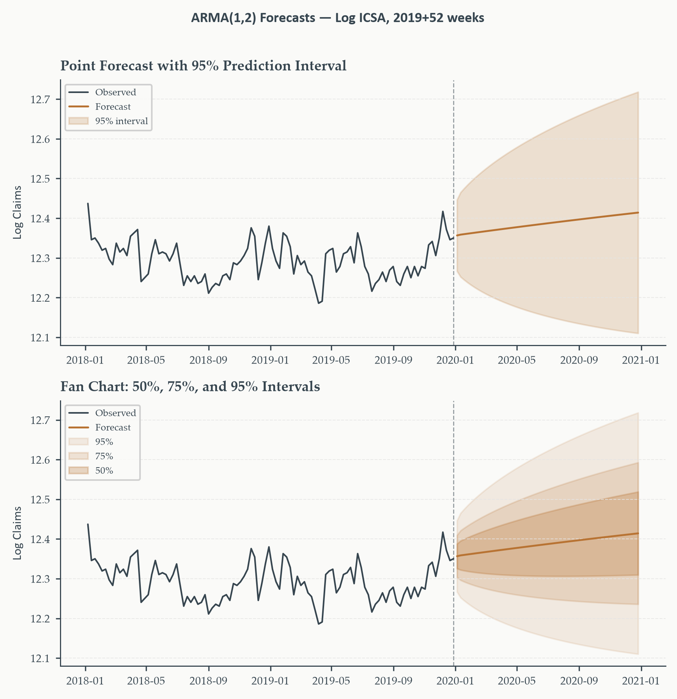

Stationary Time Series Models
Chapter 3
2026-09-03
Why Your Own Past Predicts Your Own Future
Not a tautology — a consequence. Why should today’s inflation rate tell us anything useful about next month’s?
- Prices are sticky; contracts renew slowly; expectations adjust gradually
- These are all distributed lag structures — today’s outcome depends on a weighted history of past shocks and past outcomes
- A variable’s own past is often the best proxy we have for that entire unobserved history
This is the foundation of everything in this chapter: the AR, MA, and ARMA families are not ad hoc curve-fitting devices. They are the natural econometric consequence of economic dynamics that unfold gradually rather than instantaneously.
Why This Chapter Matters
The workhorses of time series econometrics — everything that follows in this course builds on this chapter’s foundation:
- Theory — the lag polynomial language, the Wold decomposition, the AR/MA/ARMA families
- Practice — the complete Box-Jenkins workflow: identify, estimate, diagnose, select, forecast
Running example throughout: weekly initial jobless claims (ICSA) — a genuinely noisy, high-frequency series where every step of the workflow earns its keep.
Today’s Roadmap
- Lag polynomials and stability
- The AR family
- The MA family
- The Wold decomposition
- ARMA models and identification
- Estimation and diagnostics
- Information criteria, forecasting, and ARMAX
Lag Polynomials and Stability
Section 1
The Language Carries Over From Chapter 1
Every model in this chapter is a difference equation. The surface details differ — some emphasize past values, others past errors — but the underlying machinery is identical to Chapter 1’s.
Lag operator \(L\), difference operator \(\Delta\), characteristic roots, the unit-circle stability condition — all of it returns here unchanged. This section is a brief recall, extended just enough to carry the work ahead.
\[ Ly_t = y_{t-1}, \qquad \Delta y_t = y_t - y_{t-1} = (1-L)y_t, \qquad \Delta_s y_t = y_t - y_{t-s} \]
The Lag Polynomial
Collecting powers of \(L\) into a single object:
\[ \phi_p(L) = 1 - \phi_1 L - \phi_2 L^2 - \cdots - \phi_p L^p \]
gives a compact way to write any linear combination of a series and its lags:
\[ \phi_p(L)y_t = y_t - \phi_1 y_{t-1} - \cdots - \phi_p y_{t-p} \]
The subscript \(p\) names the polynomial’s order — how many lags it reaches back. This is the left-hand side of the AR(\(p\)) model — the first model class we build. Variants of this expression appear in every remaining section of the chapter.
Characteristic Roots: The Reminder
Stability condition. The characteristic roots of \(\phi_p(L)\) — the values \(\lambda\) solving \(\lambda^p-\phi_1\lambda^{p-1}-\cdots-\phi_p=0\) — are the eigenvalues of the companion matrix \(\mathbf{F}\) from Chapter 1. The process is covariance-stationary iff all characteristic roots lie strictly inside the unit circle, \(|\lambda_j|<1\).
A root on the circle: unit root, nonstationary. A root outside: explosive.
Two equivalent conventions, restated. Some references state stationarity as roots of \(\phi(z)=0\) lying outside the unit circle, \(|z_j|>1\) — the lag-polynomial-root convention, reciprocal to the characteristic-root convention. This course follows Chapter 1’s convention throughout: characteristic roots inside the unit circle.
The AR Family
Section 2
The AR(1): Definition
AR(1) process. \(\quad y_t = c+\phi_1 y_{t-1}+\varepsilon_t, \qquad \varepsilon_t\sim WN(0,\sigma^2)\)
When \(|\phi_1|<1\) (characteristic root inside the unit circle), covariance-stationary with mean \(\mu=c/(1-\phi_1)\).
Reading the model: strip away the memory of \(y_t\) (subtract its own weighted past) and what’s left is a constant plus a pure, unpredictable innovation.
\[ y_t - c - \phi_1 y_{t-1} = \varepsilon_t \]
Everything on the left is explained by the model; what remains on the right is the part of \(y_t\) nothing in the past could have predicted.
From AR(1) to AR(\(p\))
One lag, then two, then three — the pattern that generalizes:
\[ \begin{aligned} \text{AR(1)}&: \quad y_t = c+\phi_1y_{t-1}+\varepsilon_t \\ \text{AR(2)}&: \quad y_t = c+\phi_1y_{t-1}+\phi_2y_{t-2}+\varepsilon_t \\ \text{AR(3)}&: \quad y_t = c+\phi_1y_{t-1}+\phi_2y_{t-2}+\phi_3y_{t-3}+\varepsilon_t \\[4pt] \text{AR($p$)}&: \quad y_t = c+\phi_1y_{t-1}+\phi_2y_{t-2}+\cdots+\phi_py_{t-p}+\varepsilon_t \\ &\;\; = c+\sum_{i=1}^{p}\phi_iy_{t-i}+\varepsilon_t \end{aligned} \]
In lag polynomial notation (Section 1): \(\;\phi_p(L)y_t = c+\varepsilon_t\).
Same reading every time: once you account for everything the past can tell you — one lag, two, three, or \(p\) — the only surprise left is white noise.
Where the ACF Comes From
Demean and multiply \(\tilde y_t=\phi_1\tilde y_{t-1}+\varepsilon_t\) by \(\tilde y_{t-h}\), take expectations:
\[ \begin{aligned} \mathbb{E}[\tilde y_t\tilde y_{t-h}] &= \phi_1\,\mathbb{E}[\tilde y_{t-1}\tilde y_{t-h}] + \mathbb{E}[\varepsilon_t\tilde y_{t-h}] \\ \gamma(h) &= \phi_1\,\gamma(h-1) + 0 \qquad (h\geq1,\ \varepsilon_t\ \text{uncorrelated with the past}) \end{aligned} \]
A recursion in \(h\). Unroll it, starting from \(\gamma(0)\):
\[ \gamma(h) = \phi_1\,\gamma(h-1) = \phi_1^2\,\gamma(h-2) = \cdots = \phi_1^h\,\gamma(0) \]
Normalize by \(\gamma(0)\) to get the autocorrelation itself:
\[ \rho(h) = \frac{\gamma(h)}{\gamma(0)} = \phi_1^h \]
Notation. \(\tilde y_t \equiv y_t-\mu\) — the series demeaned. Working in deviations from the mean is what makes the covariance algebra clean; \(\mathbb{E}[\tilde y_t]=0\) throughout.
The same demean-and-multiply approach generalizes to AR(\(p\)) — the general result is exactly the Yule-Walker recursion, next.
The Yule-Walker Equations: Where They Come From
The previous slide found \(\rho(h)=\phi_1^h\) for AR(1) by demeaning, multiplying by \(\tilde y_{t-h}\), and taking expectations. What does that same procedure give for general AR(\(p\))?
Multiply the demeaned AR(\(p\)) by \(\tilde y_{t-h}\), take expectations — since \(\varepsilon_t\) is uncorrelated with any past value, dividing through by \(\gamma(0)\) gives:
\[ \rho(h) = \phi_1\rho(h-1)+\phi_2\rho(h-2)+\cdots+\phi_p\rho(h-p), \qquad h=1,\ldots,p \]
Check it against what we already know. Set \(p=1\): the sum collapses to \(\rho(h)=\phi_1\rho(h-1)\), whose solution is exactly \(\rho(h)=\phi_1^h\) — slide 12’s AR(1) result, recovered as the special case. The AR(\(p\)) formula is the same derivation, carried through with more terms.
Three practical payoffs, developed on the next slides: closed-form starting values for MLE optimization, the machinery behind every PACF computation (Durbin-Levinson), and clean theoretical results not easily reached from the likelihood directly.
Yule-Walker: AR(1) and AR(2)
AR(1) — a single equation at \(h=1\):
\[ \rho(1) = \phi_1 \]
The parameter equals the lag-1 autocorrelation directly. This is why \(\hat\phi_1\approx\hat\rho(1)\), and the first PACF bar is almost a direct read-off.
AR(2) — two equations at \(h=1,2\):
\[ \begin{aligned} \rho(1) &= \phi_1+\phi_2\,\rho(1) \\ \rho(2) &= \phi_1\,\rho(1)+\phi_2 \end{aligned} \]
Solve the first for \(\phi_1=\rho(1)(1-\phi_2)\), substitute into the second — both parameters recovered from two observable autocorrelations.
Yule-Walker: The General Case and Why It Matters
\[ \mathbf{R}\boldsymbol\phi = \boldsymbol\rho, \qquad R_{ij}=\rho(|i-j|), \qquad \boldsymbol\phi=\mathbf{R}^{-1}\boldsymbol\rho \]
Reading the notation (Matrix Algebra Parts I–II). \(\mathbf{R}\) — the \(p\times p\) autocorrelation matrix, symmetric, entry \(R_{ij}=\rho(|i-j|)\). \(\boldsymbol\phi=(\phi_1,\ldots,\phi_p)'\) — the unknown AR coefficients, stacked into a column vector. \(\boldsymbol\rho=(\rho(1),\ldots,\rho(p))'\) — the observed autocorrelations, same shape. One matrix equation packages the \(p\) scalar equations from two slides ago — exactly the same move as \(\mathbf{X}'\mathbf{X}\boldsymbol\beta=\mathbf{X}'\mathbf{y}\) for OLS.
A unique solution whenever the process is stationary — replacing population autocorrelations with sample estimates \(\hat\rho(h)\) gives the Yule-Walker estimator: closed-form, no iteration.
Not the most efficient estimator — MLE (Section 6) is preferred in practice — but it earns its place three ways: starting values that prevent MLE from converging to a local optimum; the Durbin-Levinson recursion that computes every PACF plot in this chapter; and clean theoretical results, like the AR(1) case, that don’t follow easily from the likelihood.
AR(\(p\)): ACF and PACF Signature
A word of caution before fitting anything. A long sample may span genuine structural change — deindustrialization, disinflation episodes, policy regime shifts. Whether a single AR model is the right representation across decades of data is a real empirical question, not a technicality. Chapter 6 provides the formal tools (Chow, Bai-Perron, Zivot-Andrews); for now we proceed and flag the issue.
The signature to remember. ACF tails off — geometric decay, never a clean cutoff. PACF cuts off after lag \(p\) — a sharp spike at lag \(p\), then (statistically) zero. This is the AR half of the identification table completed in Section 5.
Seeing the Signature Directly: AR(1)
The rule “PACF cuts off at lag \(p\)” is easy to state and easy to miss when actually staring at a plot. Three simulated processes, one at a time.

One significant PACF spike, then silence — exactly \(p=1\).
Seeing the Signature Directly: AR(2)

Two significant PACF spikes, then silence — exactly \(p=2\). Note the negative \(\phi_2\) produces a dip at lag 2 in the ACF too — the sign pattern reflects the specific coefficients, but the PACF cutoff location is what identifies the order.
Seeing the Signature Directly: AR(3)

Three significant PACF spikes, then silence — exactly \(p=3\).
The pattern generalizes to any \(p\): count the significant PACF spikes before the cutoff, and that count is the AR order — the practical reading behind everything the identification table in Section 5 formalizes.
The MA Family
Section 3
A Second, Different Kind of Memory
The AR family explains persistence through feedback in levels. Is that the only mechanism available?
Think of a firm’s inventory. A supply disruption this month — a shock \(\varepsilon_t\) — forces a drawdown; next month, the firm rebuilds. The level of output last month wasn’t unusual — but last month’s shock directly shapes this month’s behavior.
Memory here comes not from the series feeding back on itself, but from shocks propagating forward through a specific mechanism, for a limited number of periods, then stopping. This is exactly what moving average models are built to capture.
The MA(1): Definition and Moments
MA(1) process. \(\quad y_t = \mu+\varepsilon_t+\theta_1\varepsilon_{t-1}, \qquad \varepsilon_t\sim WN(0,\sigma^2)\)
No feedback from past levels — only from the past error. Mean is \(\mu\) directly. Variance, using \(\varepsilon_t\perp\varepsilon_{t-1}\):
\[ \sigma_y^2 = \text{Var}(\varepsilon_t+\theta_1\varepsilon_{t-1}) = \sigma^2+\theta_1^2\sigma^2 = \sigma^2(1+\theta_1^2) \]
A hard constraint worth knowing. \(\rho(1)=\theta_1/(1+\theta_1^2)\) is bounded — its maximum, at \(\theta_1=\pm1\), is exactly \(\pm1/2\). If the sample ACF cuts off after lag 1 with \(|\hat\rho(1)|>0.5\), the MA(1) is not the right model, no matter how good the eyeball fit looks.
Invertibility: A New Kind of Condition
Stationarity asked whether \(y_t\) has finite variance — for an MA model, that’s automatic. Is there a second condition, one with no AR counterpart?
Ask whether we can go backward — recover \(\varepsilon_t\) from the observed history of \(y_t\). Inverting \(\theta(L)=1+\theta_1L\):
\[ \varepsilon_t = (y_t-\mu)-\theta_1(y_{t-1}-\mu)+\theta_1^2(y_{t-2}-\mu)-\cdots \]
Invertibility. This series converges iff \(|\theta_1|<1\) — the characteristic root of \(\theta(L)\) inside the unit circle, the mirror of the AR stationarity condition. When it holds, the MA(1) rewrites as an AR(\(\infty\)) in \(y_t\).
Stationarity and invertibility are logically independent. Stationarity is a property of \(y_t\) itself — automatic for any MA, by construction. Invertibility is a property of whether innovations are recoverable — a condition on \(\theta(L)\) alone, and it can fail even for a perfectly well-behaved, stationary process.
Why Invertibility Matters in Practice
Two reasons, not one:
- Identification. An MA(1) with \(\theta_1\) and one with \(1/\theta_1\) have identical ACFs — \(\rho(1)\) is unchanged under that substitution. Every ACF is consistent with two MA(1) models; we conventionally pick the invertible one (\(|\theta_1|<1\)), not because it fits better, but because it’s the unique choice that makes innovations recoverable from data
- Estimation. An invertible MA can be approximated arbitrarily well by a high-order AR — exploited directly in how MA models get estimated (next slide). A non-invertible MA cannot
Software enforces invertibility by default — worth knowing why, not just accepting it as a black-box constraint.
The MA(\(q\)): Generalizing to \(q\) Lags
\[ y_t = \mu+\varepsilon_t+\theta_1\varepsilon_{t-1}+\cdots+\theta_q\varepsilon_{t-q} = \mu+\theta(L)\varepsilon_t \]
Always stationary — a finite sum of white noise terms, so finite variance is automatic. Invertible when every characteristic root of \(\theta(L)\) lies inside the unit circle.
\[ \rho(h) = \begin{cases}\dfrac{\sum_{j=0}^{q-h}\theta_j\theta_{j+h}}{\sum_{j=0}^{q}\theta_j^2} & h=1,\ldots,q \\[6pt] 0 & h>q\end{cases} \]
The mirror image of AR(\(p\)). ACF cuts off sharply after lag \(q\); PACF tails off gradually — never a clean cutoff. A clean ACF cutoff points to MA; a clean PACF cutoff points to AR. Second half of the identification table Section 5 completes.
Estimating an MA Model: Why It’s Harder
The AR(\(p\)) is a straightforward regression — \(y_{t-1},\ldots,y_{t-p}\) are all observed. What’s different about MA?
The right-hand side of the MA(\(q\)) equation contains \(\varepsilon_{t-1},\ldots,\varepsilon_{t-q}\) — unobserved innovations. We see \(y_t\), never \(\varepsilon_t\) directly. OLS has no design matrix to form.
The fix: iterative substitution. Start with a guess (often from the AR(\(\infty\)) approximation); construct fitted residuals \(\hat\varepsilon_t=y_t-\hat\mu-\hat\theta_1\hat\varepsilon_{t-1}-\cdots\) recursively; update parameters to minimize squared fitted residuals; repeat to convergence. Invertibility is what guarantees this converges — the deepest practical reason it matters, beyond identification alone. Section 6’s MLE formalizes exactly this idea under a distributional assumption.
Seeing the MA Signature Directly: MA(1)
Same exercise as the AR figures — simulate, then look for the rule made visible. This time, watch the ACF column instead of the PACF.

One significant ACF spike, then silence — exactly \(q=1\). The PACF tails off instead — the mirror image of the AR case.
Seeing the MA Signature Directly: MA(2)

Two significant ACF spikes, then silence — exactly \(q=2\).
Count the significant ACF spikes before the cutoff — that count is the MA order, the exact mirror of the AR reading rule from Section 2.
The Wold Decomposition
Section 4
Every AR Is Secretly an Infinite Distributed Lag
An AR(1) writes \(y_t\) in terms of its own past value. Is there another way to write the same process — in terms of shocks instead?
Starting from \(\phi_p(L)y_t=c+\varepsilon_t\) and inverting the lag polynomial — valid exactly when every characteristic root lies inside the unit circle:
\[ y_t = \phi_p(L)^{-1}(c+\varepsilon_t) = \mu+\varepsilon_t+\psi_1\varepsilon_{t-1}+\psi_2\varepsilon_{t-2}+\cdots = \mu+\psi(L)\varepsilon_t \]
MA(\(\infty\)) representation. Every stationary AR(\(p\)) is equivalent to an infinite distributed lag of past shocks. The coefficient \(\psi_j\) is the impulse response at horizon \(j\) — the effect on \(y_t\) of a unit shock \(j\) periods ago. Stationarity is exactly what makes \(\psi_j\to0\) — shocks are transitory.
A Question the AR Case Can’t Answer Alone
This MA(\(\infty\)) representation fell out of a specific algebraic trick — inverting an AR polynomial. Is it a coincidence of the AR family, or does every stationary process have some version of it?
Wold Decomposition Theorem. Every covariance-stationary process \(\{y_t\}\) with mean zero can be written as
\[ y_t = \underbrace{\sum_{j=0}^\infty\psi_j\varepsilon_{t-j}}_{\text{linearly indeterministic}} + \underbrace{\eta_t}_{\text{linearly deterministic}} \]
where \(\psi_0=1\), \(\sum\psi_j^2<\infty\), \(\{\varepsilon_t\}\sim WN(0,\sigma^2)\) are the Wold innovations, and \(\eta_t\) is perfectly predictable from its own past and uncorrelated with every \(\varepsilon_s\).
For nearly every economic series, \(\eta_t\) is absent or trivially removed by demeaning — the stochastic part, the MA(\(\infty\)) representation, is where all the interesting structure lives.
Why the Theorem Matters
Four consequences, not one:
- Justifies MA models. An MA(\(q\)) is simply a Wold representation that truncates: \(\psi_j=0\) for \(j>q\). The theorem says every stationary process has this form; the MA(\(q\)) says the form happens to be finite
- Justifies AR approximation. Any truncated MA(\(\infty\)) can be approximated arbitrarily well by a high-enough-order AR(\(p\)) — fitting AR to data that isn’t literally autoregressive is not automatically wrong
- Defines the innovation precisely. \(\varepsilon_t\) is the residual from the best linear predictor of \(y_t\) given its full past — uncorrelated by construction, though not necessarily independent
- Connects to impulse responses. The \(\psi_j\) from the AR case, generalized: every stationary process has impulse responses, and square-summability is the formal statement that shocks eventually die out
The AR and MA families are not one subordinate to the other — they are dual representations of the same underlying structure. This duality becomes a genuinely practical tool once we reach ARMA identification in Section 5.
What the Theorem Does Not Say
Two limits worth stating clearly. The representation is purely linear — a process can have uncorrelated Wold innovations and still hide real nonlinear dependence. Squared innovations can be correlated even when the innovations themselves aren’t; this is exactly the ARCH situation from Chapter 1’s white-noise discussion, revisited properly in Chapter 9. And the theorem is not constructive — it guarantees the \(\psi_j\) exist, but says nothing about their actual values for a given process. We recover them only by fitting a specific parametric model (AR, MA, ARMA) and reading off the implied coefficients.
ARMA Models and Identification
Section 5
Why Combine AR and MA?
AR handles persistent, slowly-decaying dependence. MA handles a shock’s shape as it propagates and dies out. What if a series genuinely needs both mechanisms at once?
Parsimony is the payoff. A process with real AR and MA structure can often be captured by a combined model with fewer total parameters than either family alone would need to reach the same fit. Two mechanisms, working together, instead of one mechanism forced to do both jobs.
The ARMA(\(p\),\(q\)) Model
\[ \phi_p(L)\,y_t = \mu^*+\theta_q(L)\varepsilon_t, \qquad \varepsilon_t\sim WN(0,\sigma^2) \]
Stationary when every characteristic root of \(\phi_p(L)\) lies inside the unit circle. Invertible when every characteristic root of \(\theta_q(L)\) does. The two conditions are independent — one governs the AR side, the other the MA side, exactly as in their standalone families.
\(\mu^*\neq\mu\). Since \(\phi_p(L)\mu=\phi_p(1)\mu\), the intercept software reports is \(\mu^*=\phi_p(1)\mu=(1-\phi_1-\cdots-\phi_p)\mu\) — not the unconditional mean directly. Recover \(\mu\) via \(\hat\mu=\hat\mu^*/\hat\phi_p(1)\). For a pure MA, \(\phi_p(1)=1\) and \(\mu^*=\mu\) — no correction needed.
Parsimony in Practice: ARMA(1,1)
\[ y_t = \mu^*+\phi_1y_{t-1}+\varepsilon_t+\theta_1\varepsilon_{t-1} \]
Two dynamic parameters (plus \(\mu^*\), \(\sigma^2\)) — often sufficient for economic series that would otherwise demand a much longer pure AR or pure MA.
The AR component absorbs the slowly-decaying part of the autocorrelation; the MA component shapes the initial decay. Heuristic: if both ACF and PACF tail off gradually from the first lag — neither showing a clean cutoff — an ARMA is likely more parsimonious than forcing either pure family to fit.
The Cancellation Problem
Each polynomial factors over the complex numbers as a product of first-order terms, one per root. What happens if \(\phi_p(L)\) and \(\theta_q(L)\) happen to share one?
If \(\phi_p(L)\) and \(\theta_q(L)\) share a common characteristic root, that factor cancels from both sides — the result is a lower-order ARMA with identical statistical properties.
Parameter redundancy. Writing the unreduced form wastes parameters, inflates standard errors, and can destabilize estimation — the likelihood surface goes nearly flat along the direction of the shared root. Symptoms: near-cancelling root pairs in the fitted polynomials, unusually large standard errors, poor convergence. Remedy: reduce both orders until no common root remains. In practice this is rare when orders are chosen carefully by information criteria (Section 7) — but it’s a common beginner mistake when ACF/PACF patterns are misread.
Neither ACF Nor PACF Cuts Off
Both AR and MA structure contribute to an ARMA’s autocovariance. What does that do to the clean cutoff rules from Sections 2 and 3?
Both functions tail off — typically a mixture of exponentials and damped sinusoids, determined by the roots of both polynomials. Neither cuts off cleanly. This makes ARMA genuinely harder to identify from ACF/PACF plots alone than either pure family.
| Model | ACF | PACF |
|---|---|---|
| AR(\(p\)) | Tails off | Cuts off after lag \(p\) |
| MA(\(q\)) | Cuts off after lag \(q\) | Tails off |
| ARMA(\(p\),\(q\)) | Tails off | Tails off |
| White noise | Zero at all lags | Zero at all lags |
Reading ACF/PACF Plots: Practical Rules
Confidence bands are guides, not gates. The standard \(\pm1.96/\sqrt{T}\) bands — a bar barely crossing may just be noise; a cluster of bars all exceeding at related lags is signal. Judge the pattern, not individual bars.
Seasonal spikes are not AR or MA structure. Regular spikes at lags 4, 8, 12 (quarterly) or 12, 24, 36 (monthly) signal seasonal dependence — this calls for a seasonal model (SARIMA, Chapter 4), not a higher-order ARMA fit to noise.
Start small. Begin with the simplest model the pattern suggests — an AR(1) or ARMA(1,1) often fits as well as a higher-order alternative once information criteria penalize complexity properly.
The Box-Jenkins Workflow
Identification gives a tentative model. What structures everything that comes after?
The Box-Jenkins Workflow.
- Identification — inspect ACF/PACF of the stationary series; select candidate class and order(s)
- Estimation — fit by maximum likelihood (Section 6)
- Diagnostics — check residuals behave like white noise (Section 6); structure remaining \(\to\) return to step 1
- Selection — among models passing diagnostics, choose by information criteria (Section 7); prefer parsimony
- Forecasting — point forecasts and prediction intervals (Section 7)
The workflow is iterative, not linear. Diagnostics routinely send us back to identification — a residual ACF spike at lag \(q\) suggests a missing MA term; a residual PACF spike at lag \(p\) suggests a missing AR term. This back-and-forth is normal practice, not a sign something went wrong. Section 6 walks through it live, on ICSA.
Estimation and Diagnostics
Section 6
From Candidate to Fitted Model
Identification gives us a candidate — an ARMA(\(p\),\(q\)) with tentative orders. What turns that candidate into actual numbers?
Two approaches exist, giving identical answers asymptotically but differing in small samples:
Conditional least squares (CLS). Rearrange the model to isolate \(\varepsilon_t\), then minimize \(\sum_t\hat\varepsilon_t^2\) — setting presample innovations to zero. Fast, transparent, and iterative in the same estimated-residuals-stand-in-for-true-innovations sense as Section 3’s MA estimation. Small-sample bias that shrinks with \(T\).
For most economic applications with several hundred observations, the bias is negligible — but for short samples or large MA coefficients, MLE is clearly preferable.
Maximum Likelihood: The Idea
Under the Gaussian assumption, the log-likelihood decomposes into a sum over one-step-ahead prediction errors:
\[ \ell(\phi,\theta,\mu,\sigma^2) = -\frac{T}{2}\log(2\pi\sigma^2) - \frac{1}{2\sigma^2}\sum_{t=1}^T\hat\varepsilon_t^2 \]
Reading each piece: the first term is a normalizing constant; the second says a larger \(\sigma^2\) spreads probability wider — lowering the likelihood unless innovations are correspondingly large; the third says smaller residuals mean higher probability, for a given \(\sigma^2\).
MLE jointly chooses every parameter to make the computed innovations as small as possible relative to \(\sigma^2\). For a pure AR model, the innovations are just OLS residuals — MLE reduces exactly to OLS. The nonlinearity enters through the MA side, where innovations depend nonlinearly on \(\theta\).
MLE: Properties and Practice
MLE for ARMA. Maximizes the Gaussian log-likelihood. Consistent, asymptotically efficient, asymptotically normal under standard regularity conditions:
\[ \sqrt{T}(\hat\theta_{MLE}-\theta_0) \xrightarrow{d} N(0, \mathcal{I}(\theta_0)^{-1}) \]
This normality is exactly what justifies the \(t\)-statistics and confidence intervals in software output.
Gaussianity is not required for consistency. Maximizing the Gaussian likelihood under non-Gaussian true innovations still produces consistent, asymptotically normal estimates — quasi-MLE (QMLE). Efficiency is lost, but inference remains valid under mild moment conditions. For most economic applications, QMLE is what we’re implicitly doing. No closed form exists — statsmodels optimizes numerically, starting from Yule-Walker.
Applied Box-Jenkins on ICSA: Baseline AR(1)
The ACF/PACF from Section 2 suggested AR(1) as the natural starting point. Fit it — then look hard at what’s left over.
\(\hat\phi_1\) comes back close to 1 and highly significant — the dominant week-on-week persistence the ACF/PACF already promised.
The residuals tell a different story. Their ACF shows significant spikes at lags 1-3; their PACF, at lags 1-2. The AR(1) has left predictable structure on the table — genuine signal the model missed, not noise. The model is not adequate. Back to identification.
AR(1) Residuals: The Evidence

Top: residuals with heteroskedastic bursts around every shaded recession — a pattern no ARMA specification can capture (Chapter 9’s job). Middle/bottom: ACF and PACF both show significant spikes at lags 1-3, exceeding the confidence band — exactly the “something’s still there” signal that sends us back to identification.
Applied Box-Jenkins on ICSA: Refining to ARMA(1,2)
Adding two MA terms: \(\hat\phi_1\) stays close to 1 and significant; \(\hat\theta_1,\hat\theta_2\) both come back significant too — confirming the structure the AR(1) missed is genuinely present in the data, not an artifact.
Reading ARMA software output. Each row: estimate, standard error, \(z\)-statistic, \(p\)-value, 95% CI — values beyond \(\pm1.96\) significant at 5%. Most software also reports Ljung-Box, Jarque-Bera, and a heteroskedasticity check in a summary panel — previewed here, developed formally next.
Condition number flags numerical stability. Very large values (\(>10^3\)–\(10^4\)) suggest near-cancellation of AR/MA roots — exactly Section 5’s Cancellation Problem, showing up as a diagnostic symptom.
ARMA(1,2) Residuals: Did the Fix Work?

Compare directly to the AR(1) residual figure two slides back. Same series, same lags — but the short-lag ACF/PACF spikes are gone. Visually, the fix worked. The formal Ljung-Box test, next, quantifies exactly how confident we can be in that read.
The Ljung-Box Test: Formal Residual Diagnostics
Ljung-Box test. \(H_0\): the first \(h\) residual autocorrelations are jointly zero.
\[ Q(h) = T(T+2)\sum_{j=1}^h\frac{\hat\rho(j)^2}{T-j} \sim \chi^2(h-p-q) \quad \text{under } H_0 \]
For ARMA(1,2) on ICSA: the short-lag ACF/PACF spikes from the AR(1) residuals are gone — visually, the fix worked. The formal test quantifies exactly how confident we can be in that visual read.
The large-\(T\) caveat. With \(T\approx2{,}800\) weekly observations, \(p\)-values can be small at every horizon almost automatically. Before treating a rejection as model failure, check the magnitude of \(\hat\rho(j)\) — not just its statistical significance. A textbook case of statistical significance without economic significance.
Jarque-Bera and Heteroskedasticity
Jarque-Bera test. \(H_0\): residuals are normally distributed, based on skewness \(\hat S\) and excess kurtosis \(\hat K\):
\[ JB = \frac{T}{6}\left(\hat S^2+\frac{\hat K^2}{4}\right) \sim \chi^2(2) \quad \text{under } H_0 \]
For ICSA, rejection is expected and unremarkable — recessionary spikes in claims produce genuine excess kurtosis. Rejection doesn’t invalidate the model; MLE stays consistent under non-Gaussianity (QMLE). It does mean Gaussian prediction intervals may understate true tail risk.
Heteroskedasticity check. Compares residual variance in the first third of the sample to the last third — an \(F\)-test under constant-variance \(H_0\). For ICSA this will almost certainly reject: claims volatility is far higher in recessions than expansions. Not a flaw in the ARMA specification — ARMA models the conditional mean, not the conditional variance. A direct forward-pointer to Chapter 9’s GARCH family.
Information Criteria, Forecasting, and ARMAX
Section 7
Choosing Among Models That Pass Diagnostics
Adding parameters always improves in-sample fit — a model with more lags always explains more variation in the estimation sample. What we actually want is a model that generalizes. How do we penalize complexity in a principled way?
\[ \text{IC} = -2\hat\ell + \text{penalty}(k,T) \]
First term rewards fit; second penalizes complexity. Lower is better. The three criteria in standard use differ only in how steeply they penalize.
Three Criteria, Three Penalties
| Criterion | Formula | Penalty/param | Best for |
|---|---|---|---|
| AIC | \(-2\hat\ell+2k\) | \(2\) | Forecasting — tolerates larger models |
| BIC | \(-2\hat\ell+k\ln T\) | \(\ln T\) | Model-order inference — consistent |
| HQ | \(-2\hat\ell+2k\ln\ln T\) | \(2\ln\ln T\) | Compromise, less common |
\(k\) = estimated parameters; \(T\) = sample size. Lower is better for all three.
BIC’s penalty grows with \(T\) — at \(T=100\), roughly 4.6 per parameter, already double AIC’s flat fee. This is what makes BIC consistent: selects the true order with probability approaching 1 as \(T\to\infty\). None is uniformly best — compute all three; disagreement is itself informative, and usually favors the simpler model.
Why not adjusted \(R^2\)? Fixed penalty regardless of sample size or purpose — no connection to consistency or forecast-MSE optimality. ICs derive their penalties from likelihood theory; adjusted \(R^2\) belongs to the cross-sectional toolkit, not time series.
Applying the Criteria: ICSA Revisited
Section 6 selected ARMA(1,2) by diagnostics. Does a richer ARMA(3,3) do better?
AIC prefers ARMA(3,3); BIC and HQ prefer ARMA(1,2). The steeper BIC/HQ penalty — \(\ln T\approx7.9\) per parameter here — finds the marginal likelihood gain from the extra parameters doesn’t clear the bar. For forecasting, ARMA(3,3) is defensible. For a credible structural characterization of the process, ARMA(1,2) is the better answer. This is exactly the “disagreement is informative” case from the previous slide.
Point Forecasts and Where Uncertainty Comes From
\[ \hat{y}_{T+h|T} = \mathbb{E}[y_{T+h}\mid\mathcal{F}_T] \]
Compute recursively: future \(y\)’s \(\to\) their forecasts; future innovations \(\to\) 0; past innovations \(\to\) fitted residuals. For \(h\geq2\) in ARMA(1,1), the MA term vanishes — the forecast inherits only AR dynamics, and \(\hat y_{T+h|T}\to\hat\mu=\hat\mu^*/(1-\hat\phi_1)\): mean reversion, governed by the AR roots.
Using the MA(\(\infty\)) representation (Section 4), the forecast error at horizon \(h\) involves only innovations after the forecast origin:
\[ y_{T+h}-\hat y_{T+h|T} = \varepsilon_{T+h}+\cdots+\psi_{h-1}\varepsilon_{T+1} \qquad\Longrightarrow\qquad \text{Var} = \sigma^2\sum_{j=0}^{h-1}\psi_j^2 \]
At \(h=1\): variance is just \(\sigma^2\). As \(h\to\infty\): forecast error variance converges to the unconditional variance \(\sigma_y^2\) — we cannot beat the unconditional distribution at very long horizons.
Prediction Intervals and Fan Charts
\[ \hat y_{T+h|T} \pm z_{\alpha/2}\hat\sigma_h, \qquad \hat\sigma_h=\hat\sigma\sqrt{\textstyle\sum_{j=0}^{h-1}\hat\psi_j^2} \]
Single-band: one confidence level, typically 95% — simplest, standard in policy documents. Fan charts: several levels at once (50/75/95%), progressively lighter shading — standard in central bank inflation reports (the Bank of England’s being the canonical example), conveying the full outcome distribution rather than one threshold.
Under non-Gaussian innovations — which Section 6’s Jarque-Bera confirmed for ICSA — these intervals are approximate: accurate near the center, too narrow in the tails. For tail-sensitive applications, bootstrap intervals or quantile regression are preferable.
ARMA(1,2) Forecasts for Log Jobless Claims

Top: the point forecast mean-reverts toward the unconditional mean rather than extrapolating the recent level indefinitely; the interval widens with horizon, eventually spanning most of the historical range. Bottom: the fan chart makes the same widening visible across three confidence levels at once.
Extending ARMA: The ARMAX Model
Every model so far explains \(y_t\) using only its own history. What if we have a genuine economic reason to think another observed series matters too?
\[ \phi_p(L)y_t = \mu^*+\boldsymbol\beta'\mathbf{x}_t+\theta_q(L)\varepsilon_t \]
ARMAX(\(p\),\(q\)). ARMA with eXogenous regressors. Estimated jointly by MLE — the ARMA error structure is specified explicitly rather than corrected for generically, making ARMAX the time-series analogue of GLS.
Stationarity depends only on \(\phi_p(L)\); invertibility only on \(\theta_q(L)\) — both conditions carry over unchanged.
The Endogeneity Caution
ARMAX is reduced-form, not structural. \(\boldsymbol\beta\) measures conditional association, not a causal effect. If \(\mathbf{x}_t\) responds to \(y_t\) — or both respond to a common shock — \(\hat{\boldsymbol\beta}\) conflates the effect of \(x\) on \(y\) with the reverse. This is the Lucas critique in concrete form: a reduced-form coefficient reflects the joint equilibrium of a system, not a deep structural parameter, and it can’t reliably predict the effect of a policy that pushes \(x\) outside its historical range.
An ARMAX may forecast well when the historical relationship is stable — but for causal questions, a structural model is required. Chapter 7’s VAR/SVAR framework is where ARMAX’s coefficient finds its proper structural interpretation.
ARMAX in Practice: The Funds Rate Puzzle
Adding the federal funds rate to log ICSA (monthly, 1967-2019): economic logic says tightening should raise claims. The estimate says otherwise.
\(\hat\beta_{FFR}=-0.013\), significant at 1%. A one-point rate increase associates with a 1.3% reduction in claims — the wrong sign, at face value.
Reverse causality: the Fed raises rates when labor markets are already strong. A VAR (Chapter 7) recovers the expected positive response to a genuine policy shock.

The fit is excellent — observed and fitted are nearly indistinguishable above — and the coefficient is still structurally wrong. ARMAX(1,2) wins on every information criterion against pure ARMA(1,2) and richer ARMAX(2,2) alike. Good for forecasting; not license to read \(-0.013\) as monetary policy’s causal effect.
Recap
We built the chapter around a single arc: from the AR family — persistence through feedback in levels — to the MA family — persistence through propagating shocks — to the Wold decomposition that shows every stationary process secretly has an MA(\(\infty\)) form, unifying the two. ARMA combined both mechanisms for genuine parsimony, with a full identification table and the Box-Jenkins workflow to guide model-building in practice. The second half made it applied: maximum likelihood estimation, formal residual diagnostics on real jobless claims data, information criteria for choosing among competing specifications, principled forecasting with prediction intervals that widen correctly with horizon, and the ARMAX extension — powerful for forecasting, but a live warning about mistaking reduced-form association for causal structure.
Every tool in this chapter assumed stationarity. That assumption is about to become the chapter’s biggest loose end.
Looking Ahead
Every derivation this chapter made — the MA(\(\infty\)) representation, the Wold theorem, the identification rules, the MLE likelihood, mean-reverting forecasts — rested on one condition: every characteristic root of \(\phi_p(L)\) strictly inside the unit circle. We managed the ICSA structural-break issue by restricting to a pre-pandemic sample — deferred, not resolved.
Chapter 4 asks the question this chapter never fully answers: what if the characteristic root isn’t \(0.98\), but exactly \(1.0\)? A unit root breaks nearly everything built here — the ACF stops decaying, Yule-Walker stops being well-defined, the standard MLE likelihood no longer applies, and forecasts stop mean-reverting and start drifting instead.
We’ll formalize \(I(d)\) notation, extend to ARIMA and seasonal SARIMA, and — as a direct payoff of this chapter’s Wold-decomposition machinery — reach the Beveridge-Nelson decomposition: a model-based way to split any series into permanent and transitory components, with no smoothing parameter to defend.
Key Terms
- Lag polynomial \(\phi_p(L)\)
- \(1-\phi_1L-\cdots-\phi_pL^p\); characteristic roots determine stationarity.
- AR(\(p\)) model
- \(\phi_p(L)y_t=\mu^*+\varepsilon_t\); ACF tails off, PACF cuts off after lag \(p\).
- Yule-Walker equations
- \(\mathbf{R}\boldsymbol\phi=\boldsymbol\rho\); links AR parameters to the ACF, gives closed-form estimates and the Durbin-Levinson PACF recursion.
- MA(\(q\)) model
- \(y_t=\mu+\theta_q(L)\varepsilon_t\); always stationary, ACF cuts off after lag \(q\), PACF tails off.
- Invertibility
- Every characteristic root of \(\theta_q(L)\) inside the unit circle; guarantees a convergent AR(\(\infty\)) representation and that innovations are recoverable.
- Wold decomposition
- Every covariance-stationary process is \(y_t=\sum\psi_j\varepsilon_{t-j}+\eta_t\) — the theoretical foundation for MA(\(\infty\)) representations generally.
- Impulse response \(\psi_j\)
- Effect on \(y_t\) of a unit shock \(j\) periods ago; \(\psi_j\to0\) under stationarity.
- ARMA(\(p\),\(q\)) / Parameter redundancy
- \(\phi_p(L)y_t=\mu^*+\theta_q(L)\varepsilon_t\); both ACF and PACF tail off. Redundant if \(\phi_p(L)\) and \(\theta_q(L)\) share a root — collapses to a lower-order model.
- Box-Jenkins workflow
- Identification \(\to\) estimation \(\to\) diagnostics \(\to\) selection \(\to\) forecasting, iterated until residuals pass.
- MLE / QMLE
- Maximizes the Gaussian log-likelihood; consistent, efficient, asymptotically normal. Under non-Gaussian innovations, quasi-MLE — still consistent, efficiency lost.
- Ljung-Box / Jarque-Bera
- Tests residual autocorrelation (jointly zero) and residual normality, respectively; large-\(T\) Ljung-Box rejections need checking against economic magnitude, not just \(p\)-values.
- AIC / BIC / HQ
- \(-2\hat\ell\) plus a complexity penalty of \(2k\), \(k\ln T\), or \(2k\ln\ln T\) respectively; lower is better. BIC is consistent for model order; AIC often favors forecast accuracy.
- Prediction interval / Fan chart
- \(\hat y_{T+h|T}\pm z_{\alpha/2}\hat\sigma_h\); a fan chart shows several confidence levels simultaneously, widening with horizon.
- ARMAX(\(p\),\(q\))
- ARMA plus exogenous regressors; \(\boldsymbol\beta\) measures conditional association, not a causal effect, unless \(\mathbf{x}_t\) is genuinely exogenous.
ECON-5371 · Time Series Analysis and Forecasting